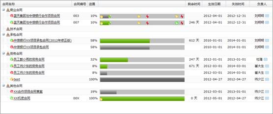
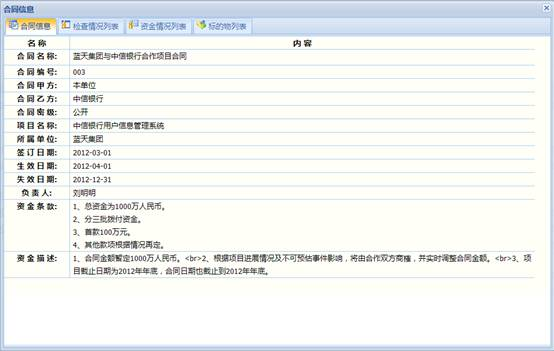
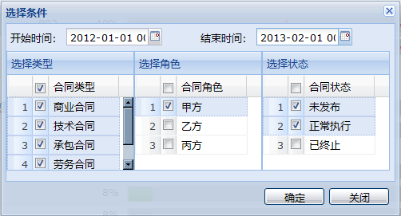
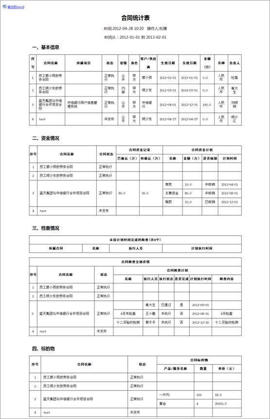
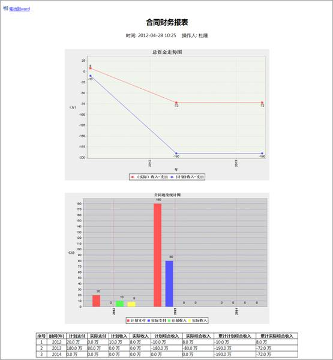
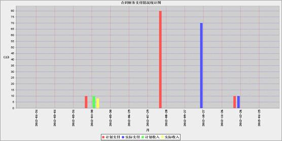
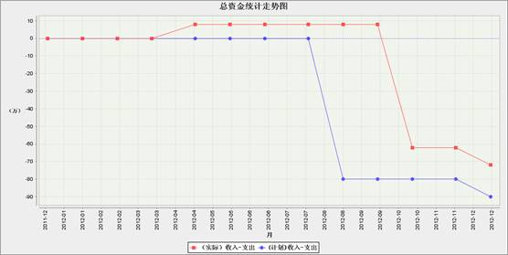

合同监控模块主要实现合同进展监控及财务监控功能，方便管理员监控合同进展及合同财务。
合同进展监控展示了合同进展列表并提供合同一键报表及财务报表功能。
4.11.1.1 合同进展列表
合同进展列表列出了给定条件的所有合同的执行情况。选择合同过滤条件有三种方式。
方式一：选择合同状态。通过勾选(或取消勾选)“未发布”、“执行中”和“已终止”这三个合同状态来过滤合同。
方式二：选择合同角色。通过选择本单位在合同中的角色来过滤合同。可选项有“全部合同”、“甲方合同”、“乙方合同”以及“丙方合同”。
方式三：高级查询。点击“高级查询”按钮打开高级查询功能，输入或选择合适的查询条件后点击“查询”按钮来过滤合同。可过滤的条件有合同名称，合同编号合同角色及合同类型。
过滤条件选择界面如下图所示：
图 合同过滤查询
合同进展监控列表如下图所示：

图 合同进展监控列表
勾选(或取消勾选）可以在监控列表中显示（或取消显示）合同检查节点。
勾选(或取消勾选）可以在监控列表中显示（或取消显示）合同资金节点。
在进展监控列表中点击合同名称链接或进展图链接将打开合同信息查看窗口，如下图所示。切换不同的标签，可以查看合同检查情况列表，资金情况列表以及标的物列表信息。

图 合同信息
4.11.1.2 一键报表
点击“一键报表”按钮可以打开报表输出选择条件窗口，如下图所示:

图 一键报表选择条件
选择合适的输出条件，点击“确定”按钮即可输出多合同一键报表。如下图所示:

图 一键报表
4.11.1.3 财务报表
点击“财务报表”按钮可以打开财务报表输出选择条件窗口（与一键报表完全一样）。选择合适的输出条件，点击“确定”按钮即可输出财务报表。如图所示：

图 财务报表
财务监控模块主要实现合同财务支付情况统计与总资金走势统计功能。
4.11.2.1 合同列表
合同列表显示了待统计财务数据的合同。用户可以选择合同角色或点击“条件过滤”按钮打开条件过滤界面，选择合适的过滤条件精确查找希望统计财务数据的合同。
4.11.2.2 财务统计
根据实际情况可以选择财务统计时间及尺度来输出美观易读的财务统计图。时间及尺度选择界面如下图所示：
图 时间、尺度选择
点击“生成监控图”按钮即可生成财务统计图，包括合同财务支付情况统计图和总资金走势图。合同财务支付情况统计图和总图资金走势图如下图所示：

图 合同财务支付情况统计图

图 总资金走势图